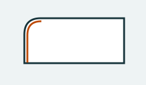
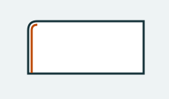
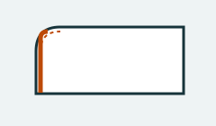

Loading measured results… This page fills in its results with JavaScript. Without it, the summary is: the 27-test UI suite passed on all 10 injected faults and both real-commit replays and failed 8 tests on a navigation-break control; a pixelmatch comparison flagged 3 of 10 faults at threshold 0.2 and 7, 5 and 4 of 10 at threshold 0.02 with budgets of 0, 97 and 486 pixels. Measured in a Chromium harness, not Electron.
Context
Why a visual layer at all
The measured comparison is loading.
Outcome



Settings compared
- default: threshold 0.2, no pixel budget; any differing pixel flags.
- strict: threshold 0.02, no pixel budget.
- local: threshold 0.02, up to 97 differing pixels tolerated.
- CI: threshold 0.02, up to 486 differing pixels tolerated.
A fault counts as caught only when it is flagged on every screen where it is drawn. The budgets of 97 and 486 pixels round to 0.01% and 0.05% of the 972,800-pixel viewport; the study does not record how they were chosen, and neither comes from the measured noise.